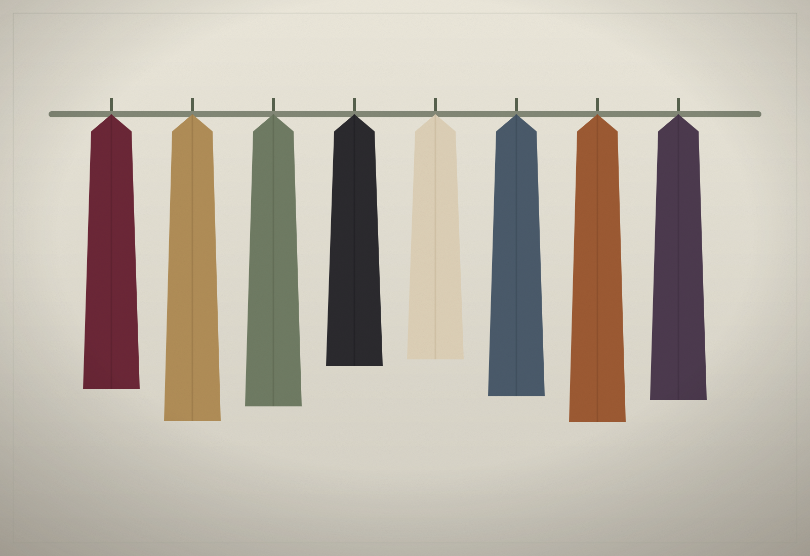
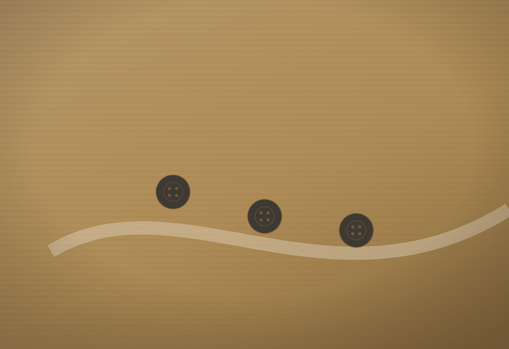

Home / Our Story
Fifty years
on the row.
Margaret Hollis opened a single room above a bookbinder in 1974 with eleven coats and a steamer. The shop has moved twice since, both times by about forty feet.

The premise
Nothing here was made
to be replaced.
For most of the twentieth century, a coat was a considered purchase. It was cut from cloth chosen for how it would behave in ten years, sewn by someone who expected to be judged on the inside of the garment as much as the outside, and repaired rather than discarded.
That assumption produced clothes that are still, decades later, better than most of what is made now. Our entire business is the small, unglamorous work of finding those clothes, putting them right, and passing them on.
We are not nostalgic about it. Some vintage is badly made, badly stored and not worth the rail space. We buy perhaps one garment in forty that we are shown.

How it works
From doorstep to rail
One
We are shown a wardrobe
Estate sales, house clearances, a phone call from a family sorting through a life. Two of us go, in person, with a tape measure and a torch. We look at seams, linings, moth damage and the inside of cuffs before we look at labels.
Two
It is cleaned by a specialist
Wool is brushed and steamed. Silk goes to a hand-finisher we have used since 1988. Leather is fed and rested. Nothing goes near a solvent unless the cloth genuinely requires it, because forty years of dry cleaning is what kills a good jacket.
Three
It is repaired, not restored
A failing seam is restitched in matching thread. A missing button is replaced from the button drawer, which has been filling since the seventies. A worn elbow stays a worn elbow — that is the garment’s biography, and erasing it would be a kind of lie.
Four
It is measured and described
Laid flat on the bench and measured in inches: chest, shoulder, sleeve, length. Condition is graded and the flaws are named first. Then it is photographed as it is, without a filter that flatters the colour.
Five
It is priced once
We price against what the piece is, not what the label shouts. There are no seasonal sales, because a garment that has survived sixty years does not become less good in January.
“A good coat should be the least interesting decision you make all decade.”Elias Vane, partner since 1991

Grading
What our condition
words actually mean.
Excellent. No visible flaws at conversational distance or closer. Original hardware. Ready to wear the day it arrives.
Very good. Honest wear consistent with age — a softened cuff, a flattened nap, a patina on brass. Structurally sound throughout.
Good. One named flaw we have decided is worth living with, always described and photographed. Priced accordingly.
We do not list anything below good. If it cannot be worn, it is not stock.
Thursday, 9am
First look at
everything new.
The archive is restocked once a week and the good pieces rarely last the morning. Subscribers see them first.
One email a week. Unsubscribe whenever you like.